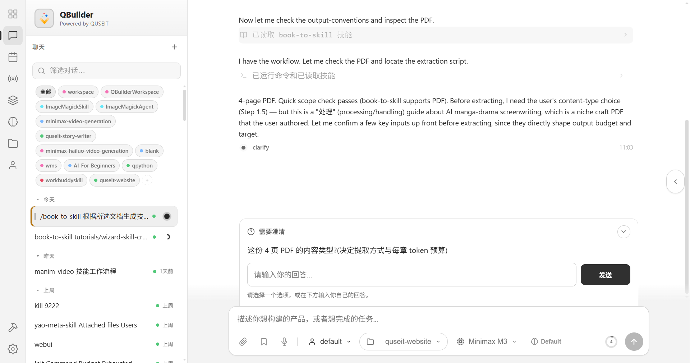
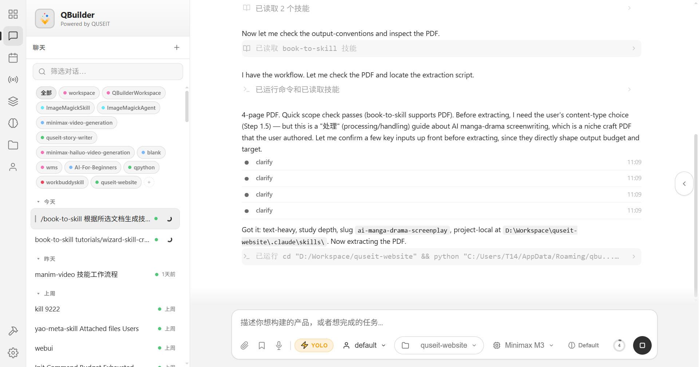
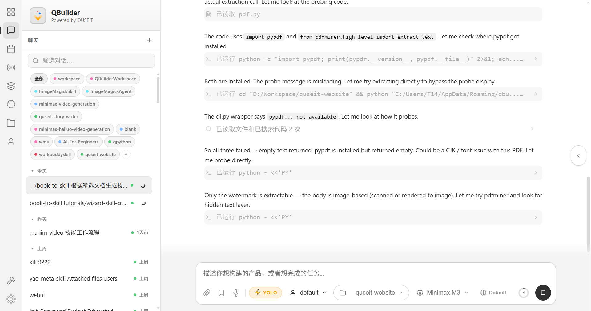
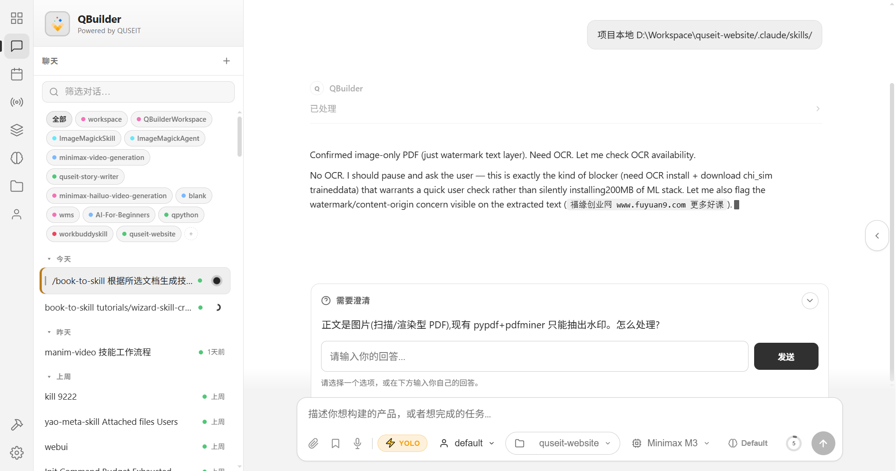

用 book-to-skill 把文档转为智能体技能
本课介绍在 QBuilder Desktop 中将文档(PDF、Markdown 或 EPUB)通过多轮澄清与 book-to-skill 流水线转化为可加载智能体技能的方法。本教程以一份 4 页扫描型 PDF 为案例,展示 book-to-skill 11 步流水线在 Desktop 中如何被压缩为 5 张澄清卡片。
流程一览
整个流程分为两段:
- 第 1–3 步:在 Desktop 中将 PDF 拖入输入框,点击「从文档生成技能」卡片,完成 5 轮澄清(内容类型 / DEPTH / slug / SKILLS_HOME / OCR 决策)。
- 第 4–6 步:AI 在后台调用
book-to-skill技能,产出符合生产规范的技能包。
关键观察:book-to-skill 在 CLI 模式下需手动响应 Step 1.5/4/5;在 Desktop 中,这三步被压缩为 3 张澄清卡片(需要澄清),写两三个字即可跳至下一步。Blocker 仍会拦截用户决策 — 本教程的扫描型 PDF 即触发 AI 主动停下询问 OCR 处理方式。
第 1 步 · 选择「从文档生成技能」入口
登录、Dashboard、上传 PDF
1.1 定位「从文档生成技能」卡片
Dashboard 上半区「技能构建」分类下包含 4 张入口卡,其中第二张为 从文档生成技能。
1.2 点击卡片,提示词自动预填
点击后,任务模板 /book-to-skill 根据所选文档生成技能 自动填入输入框。亦可手动修改,但保留该前缀有助于 AI 路由至相应技能。
第 2 步 · 卡片触发,输入框自动填充
点击「从文档生成技能」,prompt 自动预填
2.1 卡片点击后,输入框自动出现预设提示词
点击「从文档生成技能」卡片后,任务模板 /book-to-skill 根据所选文档生成技能 自动填入输入框 — 该预设提示词即 book-to-skill 技能的调用入口。
亦可手动修改,但建议保留 /book-to-skill 这一技能路径前缀。
/book-to-skill 前缀 该前缀是 Desktop 的 slash command 路由机制。AI 见到该前缀后自动加载 book-to-skill 技能,而非进入通用对话。若自定义提示词时遗漏前缀,AI 仍可能推断需进行技能蒸馏,但保留前缀最为稳妥。
2.2 上传文档,附件栏出现附件标签
输入框左下角的图标按钮中,第一个回形针形状按钮即为上传附件按钮。点击后可选择拟转化为技能的文档。
选择文档后,输入框上方将出现附件栏,以小型卡片形式显示文件名与文件大小(即「附件标签」)。
第 3 步 · 发送,进入多轮澄清
关键:用户的回答决定 book-to-skill 产出的技能
附件挂载后,点击右下角的 ↑ 按钮发送。Desktop 将自动加载 book-to-skill 技能、读取 PDF 摘要,并抛出第一张澄清卡片。

3.1 各张澄清卡片的内容
book-to-skill 将需要预先获取的信息压缩为若干澄清卡片(需要澄清),用户只需在输入框中撰写一句话提交即可。
| 轮次 | 对应 book-to-skill 工作流 | 回答示例 |
|---|---|---|
| 澄清 #1 | Step 1.5 内容类型 | 将文章按漫剧剧本来处理 |
| 澄清 #2 | Step 4 DEPTH(study / reference) | 让 Agent 按框架生成漫剧剧本,DEPTH=study |
| 澄清 #3 | Step 5 技能 slug | ai-manga-drama-screenplay |
| 澄清 #4 | Step 5 SKILLS_HOME | <工作区>/skills/ |
| 澄清 #5 | Step 6 blocker(扫描型 PDF 等) | 取决于 PDF 类型(详见 第 5 步) |
3.2 回答的三条原则
- 具体优于抽象:不表述为「按用途处理」,而明确为「按漫剧剧本处理」 — AI 将根据用词推断提取策略、章节结构与术语保留方式。
- 明确 DEPTH 取舍:若目标是使 Agent 真正按框架执行,选择 DEPTH=study(章节内容更详细,且复现 Worked Example);若仅作参考用途,DEPTH=reference 更节省 token。
- slug 反映文档核心:采用小写连字符的英文短语,体现文档核心用途。例如:
ai-manga-drama-screenplay/cialdini-influence。
3.3 5 轮澄清完成,工具栏出现 ⚡ YOLO
5 轮澄清完成后,工具栏将出现 ⚡ YOLO 橙色 chip — 该开关启用后,本会话内所有 subprocess 命令将自动放行。book-to-skill 后续将调用 extract.py、生成章文件等,每一步可能触发审批对话框,启用 YOLO 可免除反复确认。

Default 推理强度建议保持默认 — book-to-skill 的 11 步流水线会根据实际需要自行决定是否进入 REPL,无需用户预先调节参数。
第 4 步 · AI 后台运行 book-to-skill 流水线
检测 PDF 类型,抽取文本,生成产物
5 轮澄清完成后,AI 自动调用 book-to-skill 技能,按工作流 Step 6–11 推进:调用 extract.py 抽取 PDF 文本、确定 token 预算、生成章文件、执行安全扫描、撰写治理文件、产出审计报告。
4.1 依赖探测链
AI 按 pypdf → pdfminer.six → OCR 的顺序逐项探测 — 这些对话流将呈现于主区域。

--install-missing 标志管理安装,但遇到 OCR 等 200MB+ ML 套件时,会主动停下等待用户决策,而非默默安装。
踩坑提示 · 扫描型 PDF 无法抽取正文时的处理
用户视为「文字 PDF」的文档可能实际为图片
5.1 现象:抽取结果仅为水印
若输入为扫描型 PDF(本教程素材 02-AI漫剧剧本的处理.pdf 即如此),book-to-skill 在 Step 6 时将遭遇障碍 — extract.py 仅能抽取部分水印文本(108 字符)。正文为图像,不含任何文本层。

AI 不会自主安装 OCR 套件 — 此时抛出第 5 张澄清卡片:
正文为图像(扫描型或渲染型 PDF),现有 pypdf + pdfminer 只能抽取水印。处理方案?
5.2 三个可选方向
- 安装 Tesseract + chi_sim traineddata(约 200MB) → AI 重跑 OCR,将图像转为文本。适用于 PDF 体积较小且对识别精度有较高要求的场景。
- 提供文本版本(Markdown / TXT) → AI 使用 fast extractor 跳过 OCR,产物生成速度最快。
- 跳过 extract → AI 基于 PDF 元信息(标题 / 作者 / 页数)生成「内容待补」占位技能,由用户后续手动补充章节。
5.3 本教程的处理方式
本教程选择第二个方向 — 在输入框中填写 提供文本版本,我自己先把 PDF 转 Markdown。book-to-skill 收到该答复后不再要求安装 OCR,而是等待用户在下一步附上文本版本,或直接放弃该 PDF、改用其他已结构化的素材。
5.4 踩坑总结
- 扫描型 PDF 不会被默默运行 OCR:book-to-skill 拒绝默默安装 200MB 套件,主动上报并等待用户决策 — 这正是其「诚实边界」的具体体现。
- 预先 OCR 比事后处理更省时:若素材为扫描件,建议先用本地工具(Adobe、WPS、OneNote 等)将 PDF 转换为可复制的文本,再交给 book-to-skill,可绕过整个 blocker 流程。
- 水印亦可作为内容来源的指纹:即使正文无法抽取,水印本身亦可作为溯源线索 — book-to-skill 会将其写入 SKILL.md 的「诚实边界」段,作为版权声明的一部分。
第 6 步 · 技能包落入 workspace
检查 <工作区>/skills// 目录
Blocker 解除(或跳过)后,AI 在后台继续走完 book-to-skill 工作流的剩余步骤 — 生成章文件、执行安全扫描、撰写治理文件、产出审计报告。
6.1 通过文件系统判断
在 workspace 根目录(例如 D:\Workspace\quseit-website\)中刷新文件管理器:
D:\Workspace\quseit-website> dir skills\
[新目录] ai-manga-drama-screenplay\6.2 book-to-skill 的标准产出结构
目录内将按 yao-meta-skill 的生产布局落盘:
skills/ai-manga-drama-screenplay/
├── SKILL.md triggers + boundary + 5 框架一行式
├── README.md package map
├── manifest.json 治理元数据
├── agents/interface.yaml 跨平台适配
├── security/permission_policy.json install-simulate 闸门
├── references/
│ ├── glossary.md 全术语
│ ├── patterns.md 漫剧生成模式
│ ├── cheatsheet.md 决策规则 / 取舍矩阵
│ └── chapters/ PDF 章节摘要(图像型 PDF 待 OCR)
└── reports/ 4 份 .md 审计 + 2 份 .htmlyao install-simulate 验证、发布至 Hub、装入任意 Agent Skills 主机。
最终结果
完成上述 6 步后,workspace 中将获得:
- 完整的 SKILL.md(含触发词、红线与诚实边界)
- 面向用户的 README.md(quick start 与排除项)
- 治理元数据 manifest.json(版本、来源、加载策略)
- yao 兼容的 agents/interface.yaml 与 security/permission_policy.json
- 按需加载的 references/{glossary,patterns,cheatsheet,chapters/}
- 审计证据 reports/(4 份 .md 与 2 份 .html)
其能力将被 Desktop 全局识别,后续可使用日常语言(如「按我这份漫剧 PDF 的格式,生成一集新剧本」)直接调用。
常见踩坑
- 扫描型 PDF 默默安装 200MB OCR 套件:book-to-skill 不会执行该操作。AI 抽取失败时会主动停下询问 —「水印 + 正文为图像」的提示即其诚实边界声明。
- extract.py 探测结果误导:
--install-missing no将跳过交互式安装,但内部探测与实际 import 偶尔不一致。AI 探测失败后将绕过探测重跑 — 无需手动干预。 - 审批弹窗反复弹出:在工具条中开启 ⚡ YOLO(slug 提交后会提示),本会话内所有 subprocess 命令将自动放行。